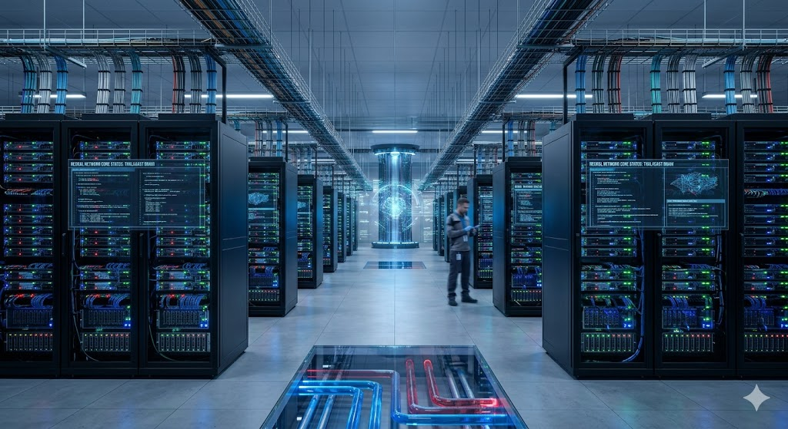

The 10 MW Air-Gapped Compute Vault

Absolute Security & The "Sneakernet" Advantage
For top-tier biotech firms, defense contractors, and climate scientists, the biggest threat to their artificial intelligence modeling is corporate espionage and cyberattacks. If a data center is connected to the internet, it can be hacked. ThalaCast solves this by operating a fully Air-Gapped Compute Vault.
Our 10 MW AI facility has zero physical or digital connection to the outside web. We utilize a high-capacity "Sneakernet" architecture. Research partners transport massive petabytes of data physically via highly encrypted, ruggedized solid-state drives. It is mathematically impossible to hack our servers from the outside world, offering our clients an impenetrable fortress for their intellectual property.
By eliminating the need to trench miles of commercial fiber-optic cables to a remote site, we drastically reduce our capital expenditures while charging a premium for ultimate data security.
The Daylight Science Engine
Our servers are no ordinary servers. We only lease our computing power to causes that benefit mankind. Our AI Center operates strictly as a "Daylight Science Engine" for complex batch processing.
During peak solar hours, the vault awakens, powered entirely by our massive municipal solar surplus. It blasts through complex protein folding, material sciences, and genome sequencing with zero carbon emissions. At sunset, the data is saved, the drives are secured, and the servers power down—protecting the city's battery reserves for residential life support through the night.
Unprecedented Efficiency
Running our massive cooling lines of the AI servers through a loop of coolant of a massive waterpark gives nearly free cooling to the Brain of the city. We utilize ultra-pure distilled water from our Zero Liquid Discharge desalination plant to provide direct-to-chip liquid cooling.
This brings us to a Power Usage Effectiveness (PUE) of ~1.02. We provide a perfectly chilled 10 MW AI center and perfectly heated municipal pools without spending a single extra watt of electricity. Nothing is wasted.